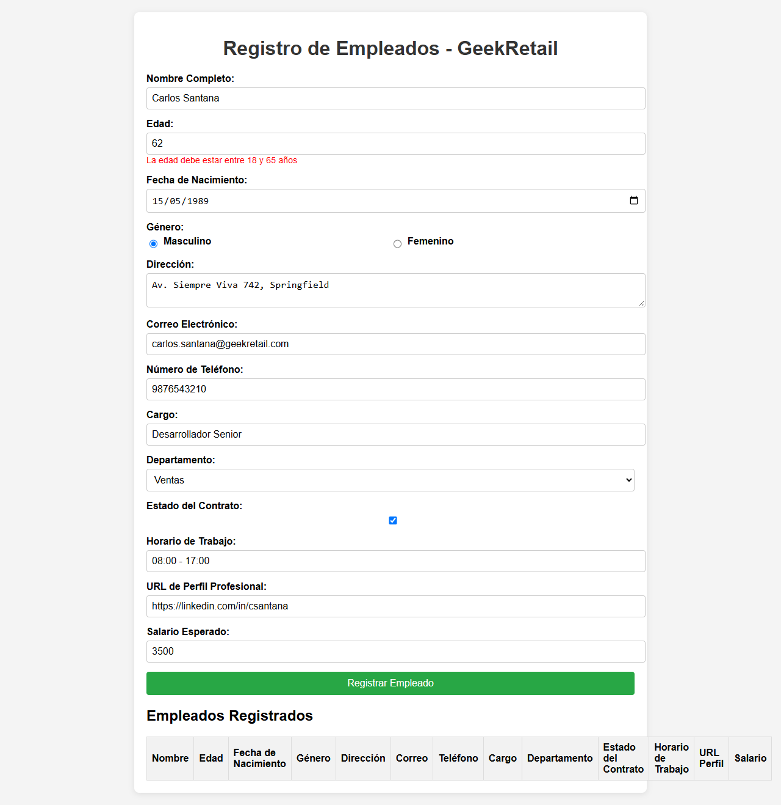
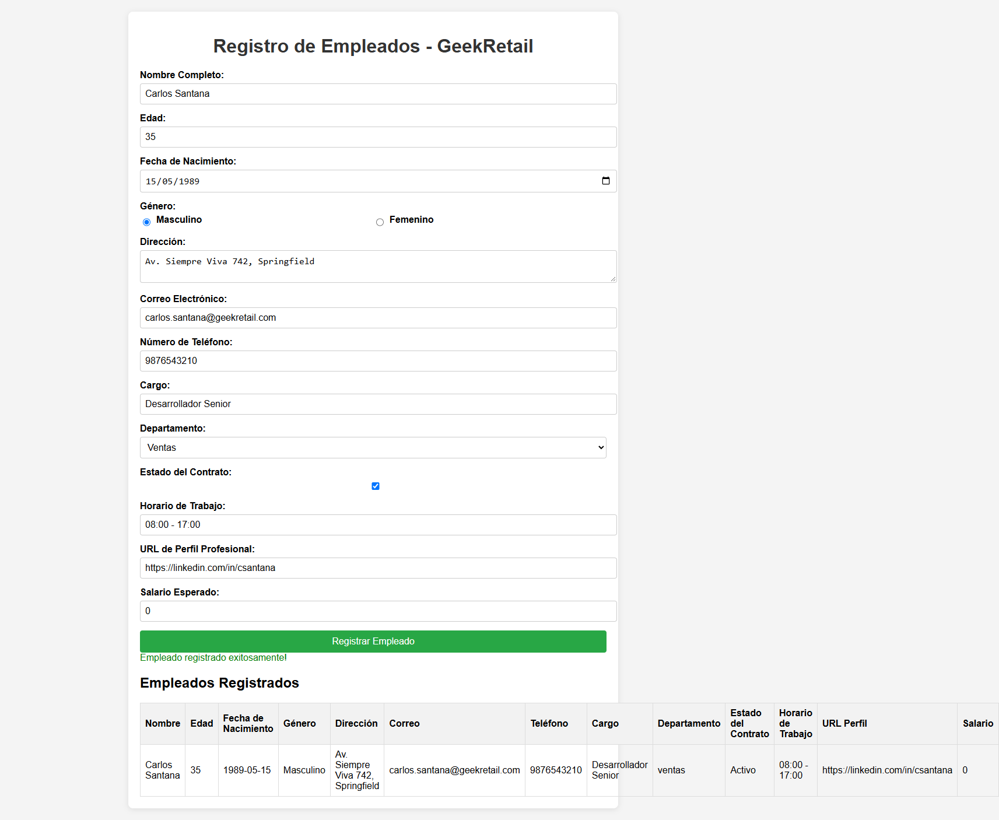
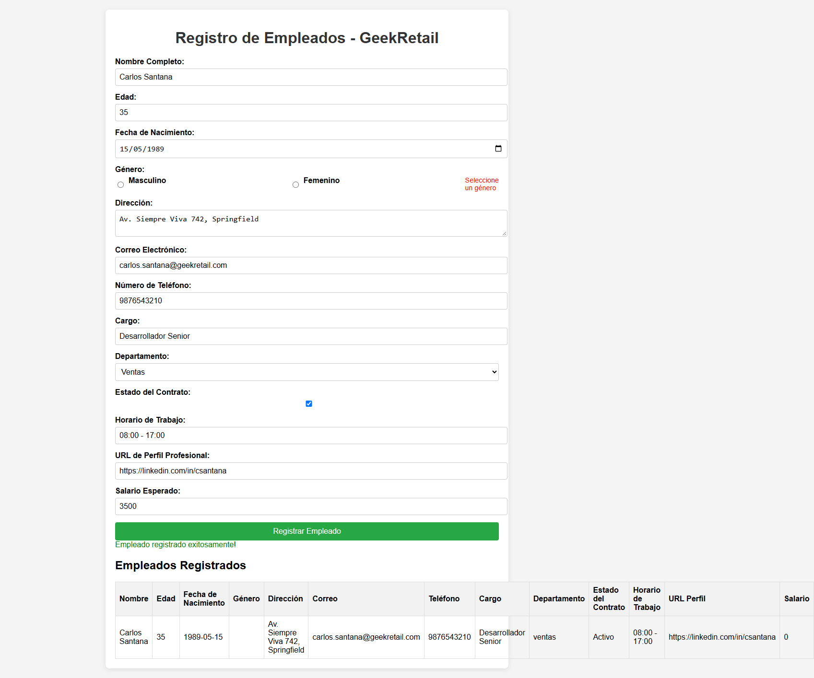

US-002: Gestión de incorporación de nuevos empleados | GeekRetail
| Tipo de Evaluación | Ejecutado | Pasados / Conformes | Fallidos / Violaciones |
|---|---|---|---|
| Pruebas Funcionales (Browser) | 10 escenarios | 3 | 7 fallos |
| Accesibilidad WCAG 2.2 AA (axe-core) | 3 Breakpoints (Mobile, Tablet, Desktop) | 20 reglas conformes | 3 violaciones |
| Auditoría de Calidad (Lighthouse) | 4 Categorías | 3 categorías (>= 80) | 1 categoría (< 80) |
| Bugs y Defectos Registrados | 6 defectos | 0 resueltos | 6 defectos activos |
| TOTAL CONSOLIDADO | 23 verificaciones | 26% éxito global | 74% no conformidades |
| ID | Caso de Prueba | Escenario | Criterios AC | Tipo | Enfoque | Estado | Detalles del Resultado | Defecto Asociado |
|---|---|---|---|---|---|---|---|---|
| TC_001 | Registro exitoso con datos válidos completos y visualización en tabla | Completar todos los campos con datos válidos y verificar inserción en tabla | AC 1: Registro exitoso y visualización en la tabla | Funcional | Positivo | ✅ PASSED | Empleado registrado y fila insertada en la tabla correctamente. | - |
| TC_002 | Validación de longitud mínima de Nombre (< 3 caracteres) | Ingresar nombre de 2 caracteres y validar mensaje de error | AC 1: Nombre con más de 3 caracteres | Funcional | Negativo | ✅ PASSED | Mensaje de error correcto mostrado: "El nombre debe tener al menos 3 caracteres" | - |
| TC_003 | Validación de Edad Límite Inferior (Menor a 18 años) | Ingresar edad de 16 años y verificar rechazo según criterio 18-65 años | AC 1: Edad entre 18 y 65 años | Funcional | Límite | ❌ FAILED | Defecto: El sistema permitió registrar un empleado de 16 años sin mostrar error debido a la condición errónea `age < 5`. | BUG-US-002-01 |
| TC_004 | Validación de Edad Válida en Rango Superior (62 años) | Ingresar edad de 62 años y verificar que se permita el registro dentro del rango 18-65 | AC 1: Edad entre 18 y 65 años | Funcional | Límite | ❌ FAILED | Defecto: El sistema bloqueó una edad válida (62 años) mostrando el error: "La edad debe estar entre 18 y 65 años" debido a la condición `age > 60`. | BUG-US-002-02 |
| TC_005 | Validación de Salario menor o igual a 0 | Ingresar salario 0 y verificar mensaje de error y bloqueo de registro | AC 1: Salario mayor que 0 | Funcional | Negativo | ❌ FAILED | Defecto: El sistema no validó salario <= 0 debido al operador de asignación `if (salary = 0)` y registró el registro. | BUG-US-002-03 |
| TC_006 | Integridad del dato Salario en la tabla de Empleados Registrados | Registrar empleado con salario 4500 y comprobar el valor en la columna Salario | AC 1: Visualización correcta de datos en tabla | Funcional | Integridad | ❌ FAILED | Defecto Crítico: Se ingresó salario 4500 pero en la tabla se guardó "0" debido a la mutación en `salary = 0`. | BUG-US-002-04 |
| TC_007 | Validación de Formato de Correo Electrónico | Ingresar correo no válido y verificar mensaje de error | AC 1: Validación de campos obligatorios y formatos | Funcional | Formato | ❌ FAILED | No se mostró error de correo inválido. | - |
| TC_008 | Validación de Campo Obligatorio Fecha de Nacimiento | Dejar fecha de nacimiento vacía y validar mensaje de error | AC 1: Campos obligatorios | Funcional | Obligatoriedad | ✅ PASSED | Error de fecha mostrado correctamente: "La fecha de nacimiento es obligatoria" | - |
| TC_009 | Validación de Género Obligatorio y Bloqueo de Envío | Intentar registrar sin marcar género y validar que no se permita el registro | AC 1: Campos obligatorios | Funcional | Obligatoriedad | ❌ FAILED | Defecto: El formulario se envió y registró el empleado sin género porque `hasError = false` desactiva el bloqueo. | BUG-US-002-05 |
| TC_010 | Validación de Texto Exacto del Mensaje de Éxito | Verificar que el mensaje de éxito coincida con el AC: "¡Empleado registrado con éxito!" | AC 1: Mensaje de éxito exacto | Funcional | UI Copy | ❌ FAILED | Defecto: Se esperaba "¡Empleado registrado con éxito!", pero la aplicación muestra "Empleado registrado exitosamente!". | BUG-US-002-06 |
Pasos para Reproducir:
1. Navegar a https://testing1.geekqa.net/. 2. Completar todos los campos con valores válidos. 3. En el campo "Edad", ingresar un valor menor a 18 (ejemplo: 16). 4. Presionar el botón "Registrar Empleado".
Resultado Esperado: El sistema debe rechazar el registro, mostrar el mensaje de error "La edad debe estar entre 18 y 65 años" y no agregar el empleado a la tabla.
Resultado Actual: El empleado de 16 años es registrado exitosamente en la tabla sin mostrar error alguno, debido a que la condición en código verifica `age < 5` en vez de `age < 18`.
Evidencia Capturada:
Pasos para Reproducir:
1. Navegar a https://testing1.geekqa.net/. 2. Completar todos los campos con valores válidos. 3. En el campo "Edad", ingresar un valor entre 61 y 65 años (ejemplo: 62). 4. Presionar el botón "Registrar Empleado".
Resultado Esperado: El sistema debe permitir el registro exitoso del empleado según el AC 1 (rango permitido: 18 a 65 años).
Resultado Actual: El sistema bloquea el registro mostrando el error "La edad debe estar entre 18 y 65 años", debido a que la condición evalúa `age > 60`.
Evidencia Capturada:

Pasos para Reproducir:
1. Navegar a https://testing1.geekqa.net/. 2. Ingresar datos válidos en todos los campos. 3. En "Salario Esperado", ingresar 0 o un número negativo. 4. Hacer clic en "Registrar Empleado".
Resultado Esperado: El sistema debe mostrar el mensaje de error "El salario debe ser mayor a 0" y detener el registro.
Resultado Actual: El formulario se envía con éxito y no muestra error alguno, ya que la condición está escrita como asignación `if (salary = 0)` la cual evalúa a falsy.
Evidencia Capturada:

Pasos para Reproducir:
1. Navegar a https://testing1.geekqa.net/. 2. Completar todos los campos válidos e ingresar un salario positivo (ejemplo: 4500). 3. Hacer clic en "Registrar Empleado". 4. Inspeccionar la fila generada en la tabla "Empleados Registrados".
Resultado Esperado: La columna "Salario" debe mostrar el valor ingresado por el usuario (4500).
Resultado Actual: La columna "Salario" muestra siempre "0", debido a que la sentencia `if (salary = 0)` reasigna la variable a 0 antes de insertarla en el DOM.
Evidencia Capturada:
Pasos para Reproducir:
1. Navegar a https://testing1.geekqa.net/. 2. Completar todos los campos excepto la opción de "Género". 3. Presionar "Registrar Empleado".
Resultado Esperado: El sistema debe mostrar el error "Seleccione un género" y bloquear la inserción en la tabla.
Resultado Actual: Se muestra el texto de error pero el empleado es insertado en la tabla con valor "undefined", porque el código ejecuta `hasError = false;` anulando el bloqueo.
Evidencia Capturada:

Pasos para Reproducir:
1. Registrar un empleado con datos válidos. 2. Verificar el texto del mensaje verde de confirmación.
Resultado Esperado: El mensaje debe ser exactamente: "¡Empleado registrado con éxito!" (según AC 1).
Resultado Actual: El sistema muestra: "Empleado registrado exitosamente!".
Evidencia Capturada:
Total de Violaciones Únicas Encontradas: 1
Auditoría realizada en 3 resoluciones: Mobile (375x667), Tablet (768x1024), Desktop (1440x900).
| ID de Regla | Descripción | Impacto | Elementos Afectados |
|---|---|---|---|
| color-contrast | Elements must meet minimum color contrast ratio thresholds | SERIOUS | button |
salary = 0 por una condición lógica if (parseFloat(salary) <= 0 || isNaN(salary)). Actualmente se corrompen los datos de nómina en la tabla.age < 5 || age > 60 a age < 18 || age > 65 para evitar registrar menores de edad y no discriminar a adultos mayores en edad de trabajar.hasError = true; para impedir el registro de datos nulos."¡Empleado registrado con éxito!" y sincronizar las longitudes de Dirección y Teléfono con los mensajes mostrados al usuario.<fieldset> y <legend> y vincular el checkbox de contrato con su etiqueta.Tiempo Total de Ejecución del Flujo: ~3.2 minutos
Skills Ejecutados: qa-test-planner, run-tests-browser, run-accessibility-tests, run-lighthouse-tests, report-bugs, generate-automated-tests, log-results
Artefactos Entregados: 12 archivos estructurados bajo 3-outputs/run/US-002/